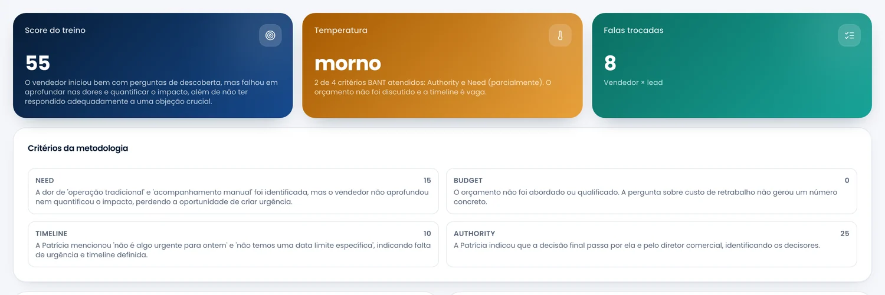

Sales Coach
salescoach.app.br
Sales Coach
salescoach.app.br
Antes da reunião
Você tirou 55.
Ainda bem que era treino.
O simulado termina com nota pelos mesmos critérios
de uma reunião de verdade — e diz o que faltou.
Resultado do treino · Porto Consultoria
